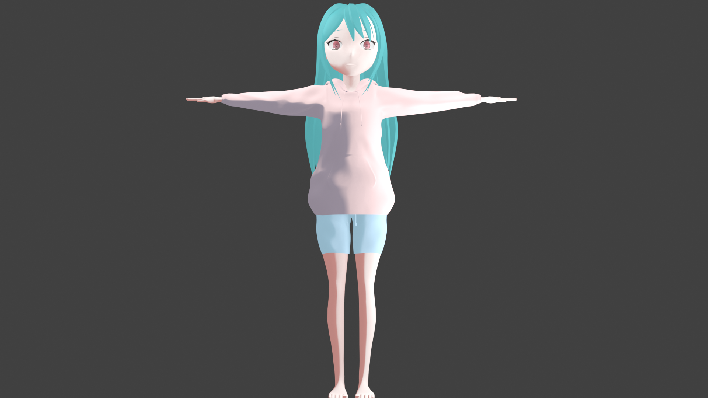
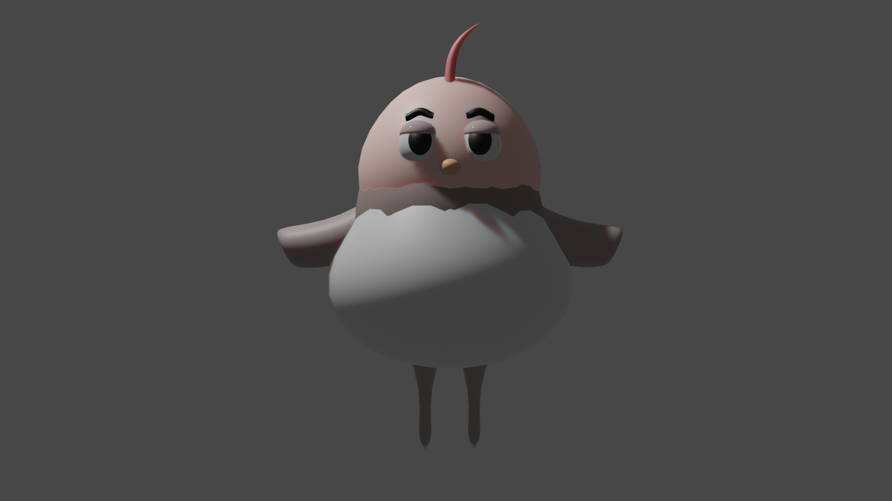
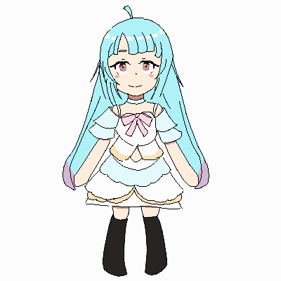
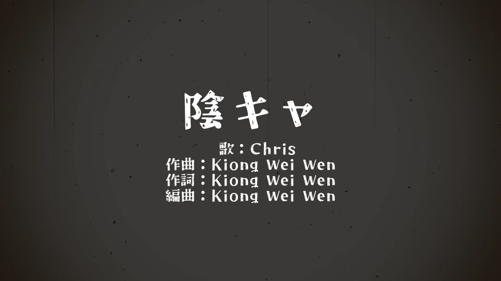
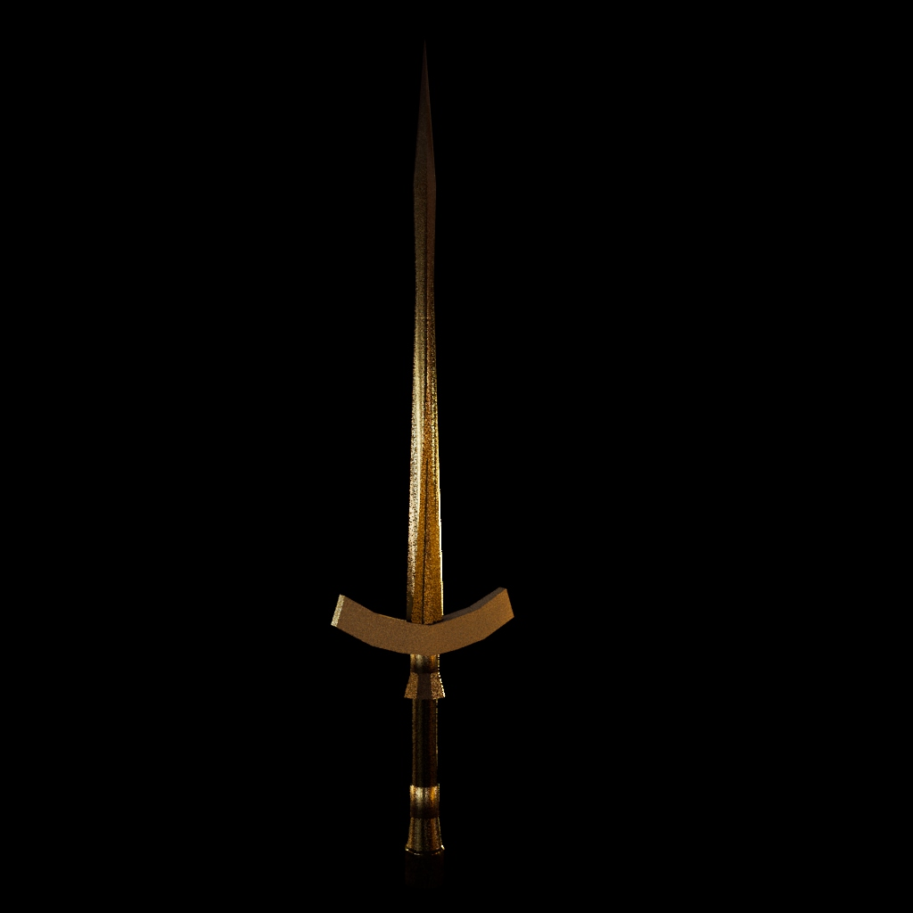
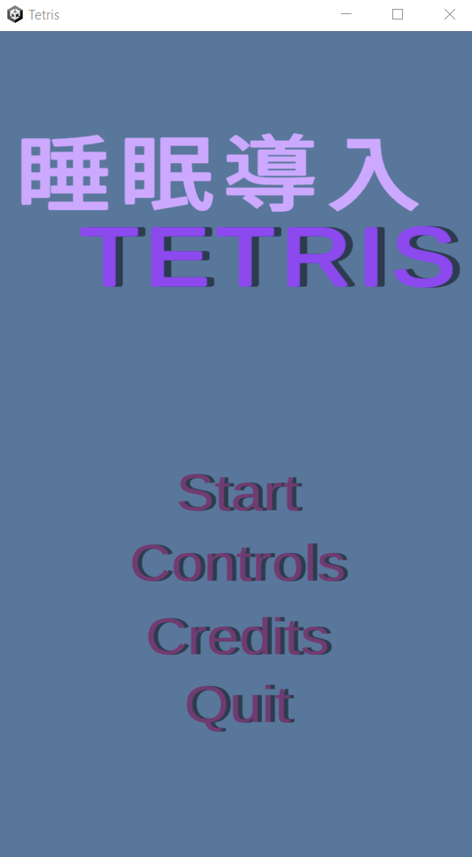
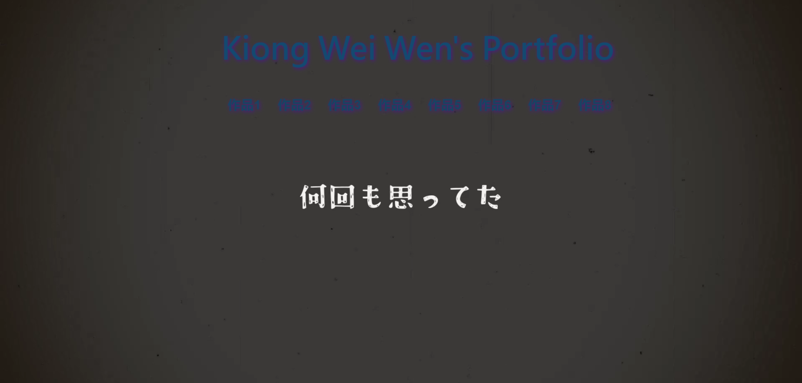

作品1:レイちゃん
制作時間：４０時間ぐらい
アイドルイメージしながらデザインしてみたキャラです。
髪色は両辺にちょっとピンク色にしてみた。
服はパーカーと短パン。
Blender使ってモデリングしました。
モデリング中一番厄介と思ったの髪作る時です、何回やってようやくいい感じ作り出した。
今回制作時反省すべきと思った点はモデリングする時、一段落終わった後コピーをセーブするべき。
ギャラリー

作品2：チーちゃん
制作時間：１６時間ぐらい
マスコットとしてデザインしてみました。
鳥をモデルとしてデザインしました。
足は爪ない方が可愛いじゃないかなと思って丸い感じで作り出した。
配色は出産したばっかりの鳥の頭、そしてちょっと茶色の毛履いてるの体の感じでデザインした。
初めてモデルをアニメーションに付けてみたいと思って足だけを動かせてみた。
次回作る時他の所も動かせたい。
ギャラリー

作品3：ドット絵
制作時間：4時間ぐらい
ドットゲームやって、こういうゲームもいいね、と思ってドット絵描いてみた。
そしてその後動かせるためにClip Studio Paint使って動かせてみた。
自分的には目の所上手くやってなかったので、次作る時要注意します。
ギャラリー

作品4：陰キャ
制作時間：１５時間ぐらい
この曲作るためにVoisona、Studio One Prime、aviutlを使いました。
歌詞は普段自分の日常生活中に考えた事を書きました。
曲はワンコーラスしか作ってない。
今回使った歌手はChrisというVoisonaのアーティストです。
Mixする時はドラム、グランドピアノ、マリンバ、とか使いました。
陰キャ

作品5:剣
制作時間：5時間ぐらい
初めてちゃんとMaya使って作り出した作品です。
主は斬るではなく差すのための剣をイメージしながらデザインしてみました。
モデリング終わった後、初めてSubstance Painter使て色塗ってみました。
色全体は金色にしました。
この作品作るために色んなあんまり使った事ないのソフトウェア使いました、いい経験になったと思います。
ギャラリー
作品6:赤髪の女子高校生
制作時間：１５時間ぐらい
赤髪の女の子を描いてみた。
校服は薄い水色のセーラー服にしました。
全体は赤と青の感じに対比色にしてみた。
背景はPhotoACというサイトから借りまして、Clip Studio Paint使って加工しました。
その後Photoshop使って全体の絵加工しました。

作品7:テトリス
制作時間：17時間ぐらい
Unity、Studio One Prime 、Visual Studio使って作りました。
基本的には
"Unity入門に最適な、テトリス講座【Unity】"
という動画を参考しながら作ってみた。
でもその上で睡眠導入ぽい曲を“DOVA-SYNDROME”から借りて、Studio One Prime使って3を曲繋がって、付けました。効果音もいい感じの音を“効果音ラボ”から借りて付けました。
プログラミングはVisual Studio使ってＣ＃スクリプト書きました。
ギャラリー

作品8:ポートフォリオサイト
制作時間：7時間ぐらい
全部の作品統括してみたサイトです。
ＨＴＭＬ、ＣＳＳとちょっとJavaScript使ってプログラムしてみた。
背景は自分で使った“陰キャ”という曲のＭＶにしました。